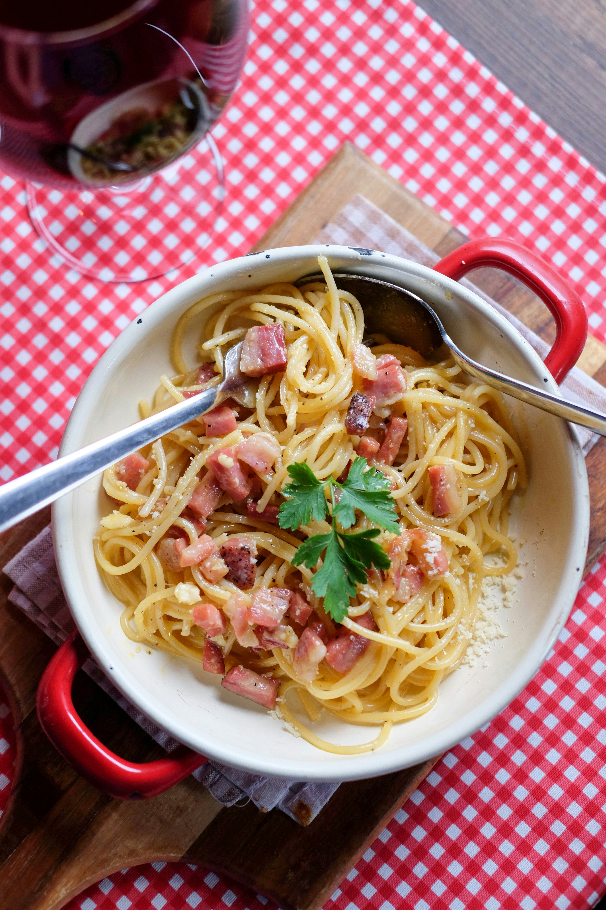

Pasta-Carbonara

General Information:
famous Roman pasta dish known for its creamy texture.
It relies on the heat of the pasta to create a silky sauce from eggs and cheese without using actual cream.
Ingredients:
- 200g Spaghetti
- 2 large eggs
- 1/2 cup Parmesan cheese (grated)
- 100g smoked beef or pancetta (diced)
- Freshly cracked black pepper
- 1 garlic clove
Preparation Steps:
- Boil pasta in salted water; reserve half a cup of pasta water.Boil pasta in salted water;
reserve half a cup of pasta water.
- Whisk eggs, Parmesan, and pepper in a small bowl
- Sauté garlic and smoked beef until crispy. Discard the garlic clove.
- Add hot pasta to the pan and remove from heat
- Quickly stir in the egg mixture and a splash of pasta water until creamy. Serve immediately.
Home